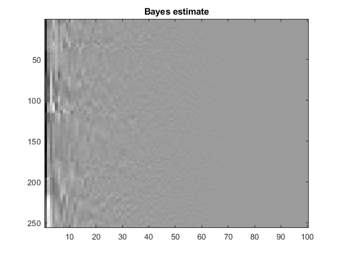
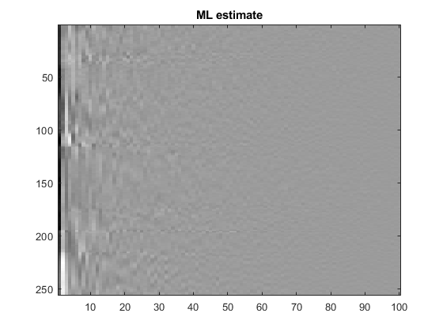
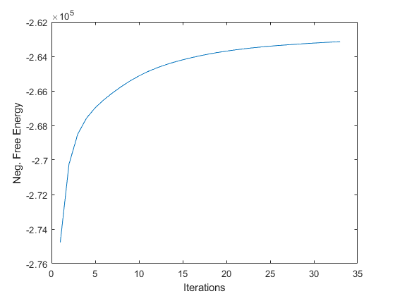
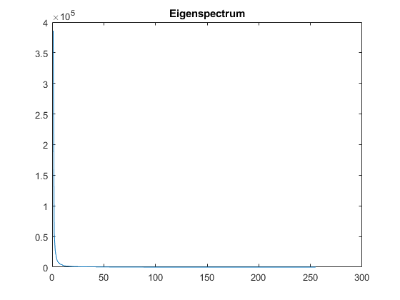
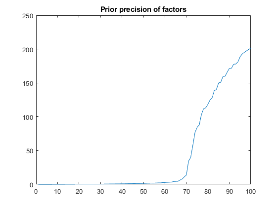

x=imread('Alan.jpg','jpg');
startx=100;
starty=300;
N=256;
xg=double(x(startx:startx+N-1,starty:starty+N-1,2));
xg=xg-mean(mean(xg));
q=100;
pca=spm_vpca(xg,q);
figure; imagesc(pca.M_w); colormap gray; title('Bayes estimate');
figure; imagesc(pca.ml.W(:,1:q)); colormap gray; title('ML estimate');
figure
plot(pca.Fm_evol);
xlabel('Iterations');
ylabel('Neg. Free Energy');
figure
plot(pca.ml.lambda);
title('Eigenspectrum');
figure
plot(pca.mean_alpha);
title('Prior precision of factors');
Iteration 1: F = -304944.1433
Iteration 2: F = -274775.8758, deltaF = 0.09893
Iteration 3: F = -270246.2245, deltaF = 0.01648
Iteration 4: F = -268502.0460, deltaF = 0.00645
Iteration 5: F = -267576.8321, deltaF = 0.00345
Iteration 6: F = -266971.5658, deltaF = 0.00226
Iteration 7: F = -266506.3413, deltaF = 0.00174
Iteration 8: F = -266105.3487, deltaF = 0.00150
Iteration 9: F = -265741.8319, deltaF = 0.00137
Iteration 10: F = -265415.3994, deltaF = 0.00123
Iteration 11: F = -265129.7983, deltaF = 0.00108
Iteration 12: F = -264883.2610, deltaF = 0.00093
Iteration 13: F = -264671.9839, deltaF = 0.00080
Iteration 14: F = -264490.9105, deltaF = 0.00068
Iteration 15: F = -264334.1967, deltaF = 0.00059
Iteration 16: F = -264196.4934, deltaF = 0.00052
Iteration 17: F = -264073.4701, deltaF = 0.00047
Iteration 18: F = -263962.2470, deltaF = 0.00042
Iteration 19: F = -263861.7715, deltaF = 0.00038
Iteration 20: F = -263772.2511, deltaF = 0.00034
Iteration 21: F = -263693.5310, deltaF = 0.00030
Iteration 22: F = -263624.0480, deltaF = 0.00026
Iteration 23: F = -263561.5329, deltaF = 0.00024
Iteration 24: F = -263504.6214, deltaF = 0.00022
Iteration 25: F = -263453.3043, deltaF = 0.00019
Iteration 26: F = -263407.6867, deltaF = 0.00017
Iteration 27: F = -263366.9068, deltaF = 0.00015
Iteration 28: F = -263329.5131, deltaF = 0.00014
Iteration 29: F = -263294.3900, deltaF = 0.00013
Iteration 30: F = -263261.0014, deltaF = 0.00013
Iteration 31: F = -263229.1820, deltaF = 0.00012
Iteration 32: F = -263199.2534, deltaF = 0.00011
Iteration 33: F = -263171.9256, deltaF = 0.00010
Iteration 34: F = -263147.4778, deltaF = 0.00009
    